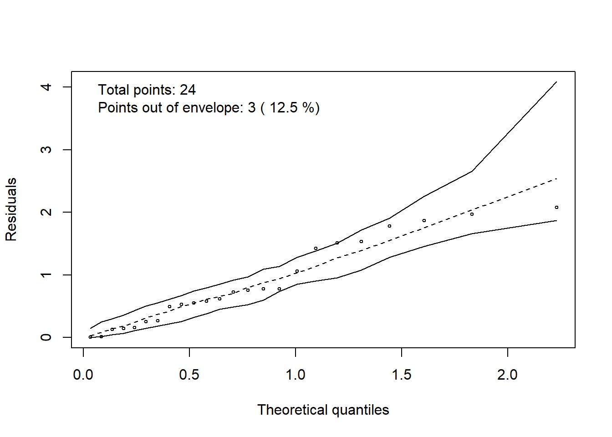

#' # Exemplo Fatorial 2x4
#' Os dados a seguir foram obtidos a partir de um experimento usando o delineamento casualizado em blocos com três repetições e tratamentos no esquema fatorial. Teve como objetivo analisar o efeito de dois espaçamentos de plantio e de quatro espécies de Eucalipto sobre o diâmetro médio de plantas com cinco anos. O experimento foi conduzido por H. A. Mello e colaboradores em Mogi-Guaçu (1966-1971).
#'
#' ## Entrada dos dados
#'
rm(list = ls())
dados <- read.csv2("aula11_fatorial.csv")
dados <- transform(dados,
Especie = factor(Especie),
Espacamento = factor(Espacamento),
Bloco = factor(Bloco))
dados$Tratamento <- as.factor(dados$Especie:dados$Espacamento)
#'
#' ## Gráficos
#'
library(ggplot2)## Warning: package 'ggplot2' was built under R version 4.3.3ggplot(dados,
aes(x = Tratamento,
y = diametro)) +
geom_point()with(dados,
tapply(diametro, Espacamento, mean))## 3x1.5 3x2
## 11.245000 9.966667ggplot(dados,
aes(x = Espacamento,
y = diametro,
group = 1)) +
geom_point(stat = 'summary',
fun = mean) +
geom_line(stat = 'summary',
fun = mean) +
xlab("espaçamento entre plantas") +
ylab("diâmetro médio (cm)")with(dados,
tapply(diametro, Especie, mean))## E. alba E. grandis E. propinqua E. saligna
## 9.376667 11.605000 11.343333 10.098333ggplot(dados,
aes(x = Especie,
y = diametro,
group = 1)) +
geom_point(stat = 'summary',
fun = mean)+
geom_line(stat = 'summary',
fun = mean)+
xlab("espécie de eucalipto") +
ylab("diâmetro médio (cm)")with(dados,
tapply(diametro,
list(Espacamento,
Especie), mean))## E. alba E. grandis E. propinqua E. saligna
## 3x1.5 10.23333 12.10333 12.29333 10.350000
## 3x2 8.52000 11.10667 10.39333 9.846667ggplot(dados,
aes(x = Espacamento,
y = diametro,
group = Especie,
color = Especie)) +
geom_point(stat = 'summary',
fun = mean)+
geom_line(stat = 'summary',
fun = mean)+
xlab("espaçamento entre plantas") +
ylab("diâmetro médio (cm)")ggplot(dados,
aes(x = Especie,
y = diametro,
group = Espacamento,
color = Espacamento)) +
geom_point(stat = 'summary',
fun = mean)+
geom_line(stat = 'summary',
fun = mean)+
xlab("espécie de eucalipto") +
ylab("diâmetro médio (cm)") #'
#' ## Ajuste do modelo
#'
modelo <- lm(diametro ~ Bloco + Espacamento*Especie,
data = dados)
#'
#'
#' ### Verificação das pressuposições da ANOVA
#'
res_Stud <- rstandard(modelo)
#'
#' - Normalidade dos erros
#'
# qqnorm(res_Stud)
# qqline(res_Stud)
library(hnp)## Carregando pacotes exigidos: MASShnp(modelo,
print.on = TRUE)## Gaussian model (lm object)
#'
#' Teste de normalidade:
#'
#' $H_0$: os erros seguem uma distribuição normal *versus* $H_1$: os erros não seguem uma distribuição normal.
shapiro.test(res_Stud)##
## Shapiro-Wilk normality test
##
## data: res_Stud
## W = 0.96292, p-value = 0.4998#'
#' Considerando-se o nível de 5\% de significância não há evidências para rejeitarmos $H_0$.
#' Logo, não se pode afirmar que os erros não seguem a distribuição normal.
#'
#' - Homogeneidade de variâncias
#'
ggplot(dados,
aes(x = Tratamento,
y = res_Stud)) +
geom_point()ggplot(dados,
aes(x = Bloco,
y = res_Stud)) +
geom_point()#'
#' Teste de homogeneidade de variâncias
#'
#' $H_0$: há homogeneidade de variâncias *versus* $H_1$: não há homogeneidade de variâncias.
#'
library(lmtest)## Carregando pacotes exigidos: zoo##
## Attaching package: 'zoo'## The following objects are masked from 'package:base':
##
## as.Date, as.Date.numericbptest(modelo)##
## studentized Breusch-Pagan test
##
## data: modelo
## BP = 16.119, df = 9, p-value = 0.06443#'
#' Considerando-se o nível de 5\% de significância não há evidências para rejeitarmos $H_0$.
#' Logo, não se pode afirmar que não há homogeneidade de variâncias.
#' - Relação entre média e variância
#'
ggplot(dados,
aes(x = fitted(modelo),
y = res_Stud)) +
geom_point()#'
#' Box-Cox
#'
library(MASS)
boxcox(modelo)#'
#' Não há necessidade de transformação dos dados, pois $\lambda = 1$ pertence ao intervalo de confiança.
#'
#' Como todas as pressuposições foram atendidas, temos o seguinte quadro da ANOVA.
#'
#'
anova(modelo)## Analysis of Variance Table
##
## Response: diametro
## Df Sum Sq Mean Sq F value Pr(>F)
## Bloco 2 1.0634 0.5317 1.6098 0.2348
## Espacamento 1 9.8048 9.8048 29.6859 8.580e-05 ***
## Especie 3 19.8639 6.6213 20.0472 2.457e-05 ***
## Espacamento:Especie 3 1.8835 0.6278 1.9009 0.1759
## Residuals 14 4.6240 0.3303
## ---
## Signif. codes: 0 '***' 0.001 '**' 0.01 '*' 0.05 '.' 0.1 ' ' 1#' # Teste de Tukey para Especie
#'
library(agricolae)
(Tukey.Especie <- with(dados,
HSD.test(diametro,
Especie,
14,
0.3303)))## $statistics
## MSerror Df Mean CV MSD
## 0.3303 14 10.60583 5.418879 0.9644373
##
## $parameters
## test name.t ntr StudentizedRange alpha
## Tukey Especie 4 4.110506 0.05
##
## $means
## diametro std r se Min Max Q25 Q50 Q75
## E. alba 9.376667 1.1581652 6 0.2346274 7.50 10.58 8.8450 9.540 10.2500
## E. grandis 11.605000 0.8611562 6 0.2346274 10.89 12.95 10.9750 11.225 12.1425
## E. propinqua 11.343333 1.1134571 6 0.2346274 10.02 12.82 10.5150 11.245 12.1550
## E. saligna 10.098333 0.3904058 6 0.2346274 9.59 10.69 9.8475 10.110 10.2750
##
## $comparison
## NULL
##
## $groups
## diametro groups
## E. grandis 11.605000 a
## E. propinqua 11.343333 a
## E. saligna 10.098333 b
## E. alba 9.376667 b
##
## attr(,"class")
## [1] "group"plot(Tukey.Especie)library(ExpDes.pt)##
## Attaching package: 'ExpDes.pt'## The following objects are masked from 'package:agricolae':
##
## lastC, order.group, tapply.stat## The following object is masked from 'package:MASS':
##
## ginvwith(dados,
fat2.dbc(Espacamento,
Especie,
Bloco,
diametro,
quali = c(TRUE, TRUE),
fac.names = c("Espaçamento",
"Espécie")))## ------------------------------------------------------------------------
## Legenda:
## FATOR 1: Espaçamento
## FATOR 2: Espécie
## ------------------------------------------------------------------------
##
##
## Quadro da analise de variancia
## ------------------------------------------------------------------------
## GL SQ QM Fc Pr>Fc
## Bloco 2 1.063 3 1.6098 0.234813
## Espaçamento 1 9.805 6 29.6859 0.000086
## Espécie 3 19.864 5 20.0472 0.000025
## Espaçamento*Espécie 3 1.883 4 1.9009 0.175884
## Residuo 14 4.624 2
## Total 23 37.240 1
## ------------------------------------------------------------------------
## CV = 5.42 %
##
## ------------------------------------------------------------------------
## Teste de normalidade dos residuos (Shapiro-Wilk)
## valor-p: 0.4998395
## De acordo com o teste de Shapiro-Wilk a 5% de significancia, os residuos podem ser considerados normais.
## ------------------------------------------------------------------------
##
## Interacao nao significativa: analisando os efeitos simples
## ------------------------------------------------------------------------
## Espaçamento
## Teste de Tukey
## ------------------------------------------------------------------------
## Grupos Tratamentos Medias
## a 3x1.5 11.245
## b 3x2 9.966667
## ------------------------------------------------------------------------
##
## Espécie
## Teste de Tukey
## ------------------------------------------------------------------------
## Grupos Tratamentos Medias
## a E. grandis 11.605
## a E. propinqua 11.34333
## b E. saligna 10.09833
## b E. alba 9.376667
## ------------------------------------------------------------------------